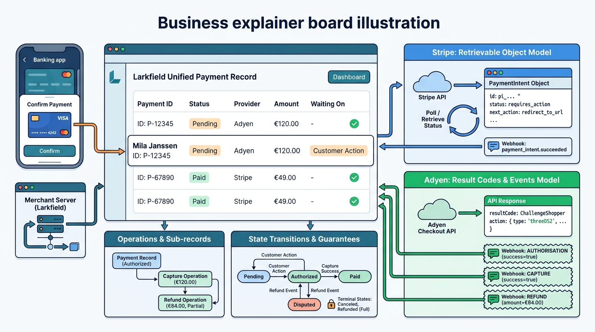

Part II — ACCEPTANCE: Getting to Yes
One Object, Many Outcomes: The Payment State Machine
AI-assisted: researched and written with Claude Code; illustrations generated with Gemini. How this works

Image generated by Google Gemini (gemini-3-pro-image-preview)